Printing the cases#
Every board has a 3D-printed case that snaps into an openGrid board, lite or full. To print the board itself, see the openGrid board. A case takes a whole number of 28 mm grid cells, and every case stands 15 mm tall, so a panel of tiles reads as one flat surface. Each case is a base, which snaps into the grid, and a lid, which snaps into the base and finishes flush with its walls.
Downloads#
Each zip has the parts as STEP, for editing in Fusion or any CAD program, and as STL, ready to slice. It also has the case’s README, with what it fits and how it goes together.
| Case | Fits | Grid | Download | |
|---|---|---|---|---|
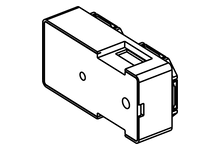 |
Main module | the main module | 2 × 1 | case-main-module.zip |
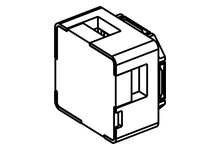 |
Splitter | the bus splitter | 1 × 1 | case-splitter.zip |
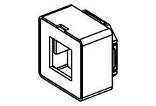 |
mx1 1x1 | the 25 mm single key, mx1-1x1 and mx1rgb-1x1 |
1 × 1 | case-mx1-1x1.zip |
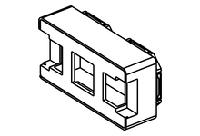 |
mx1 | the single key, mx1 and mx1rgb |
2 × 1 | case-mx1rgb.zip |
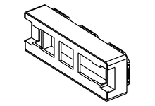 |
mx3rgb | three keys in a row, mx3rgb |
3 × 1 | case-mx3rgb.zip |
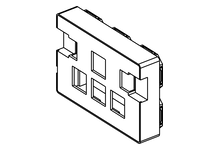 |
mx4 | the WASD cluster, mx4 and mx4rgb |
3 × 2 | case-mx4.zip |
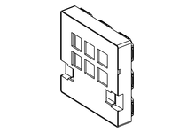 |
mx6rgb | six keys in a 3 × 2 grid, mx6rgb |
3 × 3 | case-mx6rgb.zip |
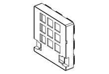 |
mx9rgb | nine keys in a 3 × 3 grid, mx9rgb |
3 × 3 | case-mx9rgb.zip |
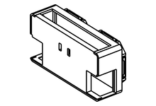 |
arc4 | four arcade buttons | 2 × 1 | case-arc4.zip |
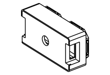 |
enc1 | one rotary encoder | 2 × 1 | case-enc1.zip |
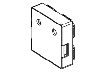 |
enc2 | two rotary encoders | 2 × 2 | case-enc2.zip |
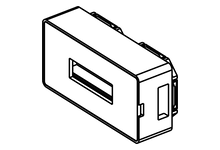 |
disp1 | the 128 × 32 text panel | 2 × 1 | case-disp1.zip |
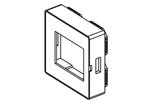 |
disp2 | the 1.8” colour display | 2 × 2 | case-disp2.zip |
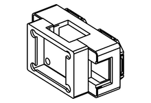 |
screenkey1 | the screen key; its cable shows on the north side | 2 × 1 | case-screenkey1.zip |
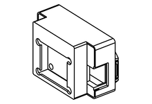 |
screenkey1, cable bay | the screen key with its cable hidden in an 8 mm bay | 2 × 1, overhangs north | case-screenkey1-bay.zip |
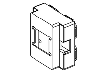 |
screenkey1, 2x2 | the screen key with its cable hidden, nothing overhanging | 2 × 2 | case-screenkey1-2x2.zip |
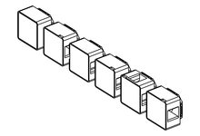 |
Cable tiles | no board: fill an empty cell, or carry tile cables across it. Blank, straight, corner, tee, cross, and drop, which takes a cable up through the grid from behind | 1 × 1 | case-cable-1x1.zip |
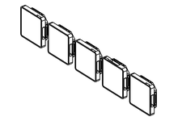 |
Low cable tiles | the back of the board: thin, 3.75 mm tall, so cables run behind the panel. Straight, corner, tee, cross, and drop. Every one has a hole at its centre, so a cable can come through the board at any of them. Needs a full (double-sided) openGrid board | 1 × 1 | case-cable-1x1-low.zip |
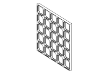 |
openGrid board | the board every case snaps into: full profile, no screw holes. This zip is 5 × 5; make one for your panel’s size | your panel | case-opengrid-board.zip |
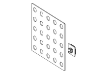 |
Back plate | the back of the board: a cover that holds the cables flat, on snap-in supports. This zip is the 5 × 5 plate; make one for your board’s size. Needs a full (double-sided) openGrid board | your board | case-back-plate.zip |
The screen key cases also have a hood, a third part that holds the screen module down on the lid.
Printing#
- Base: print it the way it sits, with the snap on the bed.
- Lid: print it top-down. The STL is already flipped. The latch tabs then point up and need no supports.
- No part needs supports.
- For the key tiles, the lid is also the switch plate, with 14.0 mm square holes. If switches are loose or tight in your print, the case README says which setting to change.
Putting a case together#
- Drop the board into the base.
- Press the lid in until its latches click. It sits flush with the walls.
- For the key tiles, push the switches through the lid into the hot-swap sockets.
- Snap the base into the openGrid board.
To open a case, pull the switches first, if it has any. Then lift the lid at the small notch in its rim with a fingernail or a small screwdriver.